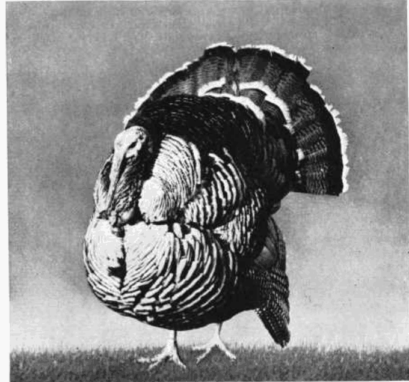
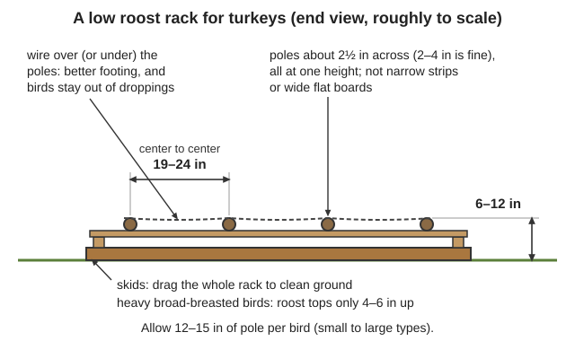
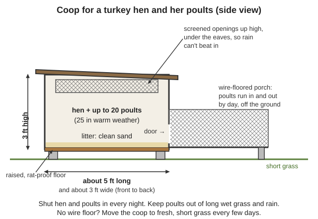
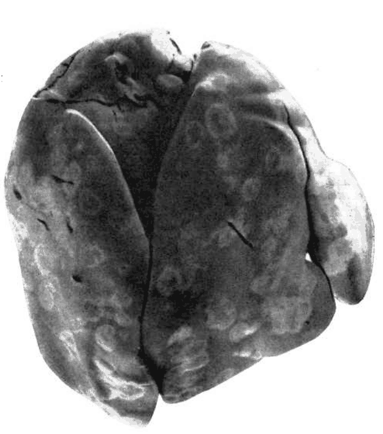
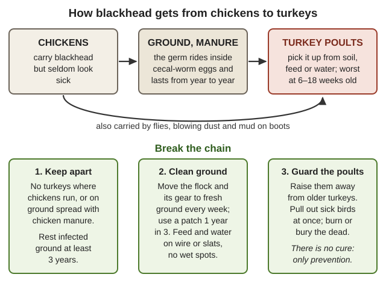

Guides › Animals · Emergency · Index A–Z
How to keep a small flock of turkeys that breeds itself and puts big birds on the table with no feed store, hatchery, vet or electricity: breeds that still mate on their own, shelter and range, the protein poults need, hatching and brooding under hens, blackhead (why turkeys and chickens must not share ground), predators, health, butchering, and a year's plan for the Illinois Valley. Turkeys are harder than chickens: poults are fragile for 8–12 weeks, and one disease can wipe them out. The main book is USDA Turkey Raising (Farmers' Bulletin 1409, 1952) in Animals\Poultry; disease books are in Small-Livestock\Chickens and Animals\Veterinary (all under Southern-Oregon\; the download list is local/library-files.txt). Where the work is the same as for chickens, this guide sends you to the Chickens guide. (arithmetic) marks numbers worked out here (Calculator).
The short version
- Keep heritage (standard) turkeys: Bourbon Red, Narragansett, Black, Slate, standard Bronze, White Holland, Royal Palm. Broad-Breasted store turkeys are often too heavy to mate and need artificial insemination — a dead end after collapse (Practical Poultry Raising, pp. 195–196).
- Never let turkeys onto ground that chickens use, or onto chicken manure. Chickens carry blackhead without looking sick, the germ lasts in the soil for years inside worm eggs, it kills poults at 6–18 weeks, and there is no cure (FB 1409, p. 68; FB 1652, p. 51).
- Move the flock to clean ground every week or two and use any patch only 1 year in 3; feed and water where droppings can't get in (FB 1409, pp. 66–67).
- A broody turkey hen is your incubator and brooder: she covers 15–18 eggs, hatches them on day 28 and broods up to 20 poults with no fuel (FB 1409, pp. 33, 37).
- Poults need 24–28% protein — grain alone starves them — and must be taught to eat. They drown in deep water and smother in corners (FB 1409, p. 45; Raising Healthy Poultry, pp. 124–125).
- Shut them in every night and until well after dawn. Dogs, coyotes and foxes take turkeys, owls take birds roosting in the open, and only an electric fence stops a bear (FB 1409, pp. 56–57; ODFW, p. 2).
- Butcher at 26–30 weeks, in cold weather. A 19-lb tom is hard to keep without refrigeration: kill one at a time and pressure-can the rest (FB 1409, p. 75; Raising Healthy Poultry, p. 125).
- The 1952 bulletin's lice, mite and crop cures are poisons (sodium fluoride, nicotine, DDT, crankcase oil, bluestone). See "Old advice in the library to ignore".
Every future turkey has to hatch from your own flock, so the birds must mate, lay and sit by themselves. In 1952 the standard varieties were Bronze, White Holland, Bourbon Red, Narragansett, Black and Slate, with Royal Palm, Jersey Buff and Beltsville Small White as newer ones (FB 1409, p. 7); today such old varieties are sold as heritage turkeys (rule of thumb). The Broad Breasted Bronze, new to the U.S. about 1935, has more breast meat but "in reproductive ability… is inferior to most other varieties": fewer eggs, less fertile, less hatchable (p. 15). Its modern descendants, sold as "Bronze" and "White", "have difficulty in reproducing because of the heavy weight of the males and their poor fertility" (Raising Healthy Poultry, p. 124); very large turkeys "must be inseminated artificially", while birds "closer to the wild cousin" have less breast "and thus, can breed more easily" (Practical Poultry Raising, pp. 195–196).
| Type | Size at butchering age | Notes |
|---|---|---|
| Standard Bronze | Heaviest standard variety; a tom of 21½ lb at 6½ months (p. 7) | Dark pinfeathers show on the skin; dark birds get "blueback" (p. 71) |
| Narragansett, Black, Slate, Bourbon Red, White Holland | Medium: toms about 19–20 lb, hens about 12 lb at 28 weeks (pp. 10–11, 18) | The core of a self-renewing flock; Bourbon Red and Slate dress out cleaner (p. 78) |
| Royal Palm, Jersey Buff, Beltsville Small White | Small: Small White toms 13–16 lb, hens about 8–9 lb at about 24 weeks (pp. 14–15) | Ready 2–4 weeks sooner; a fifth to a quarter more birds in the same space (p. 15); a small carcass is easier to use up without a freezer |
| Broad-Breasted Bronze or White | Largest | Eat them; don't plan a future on them |
The strain matters more than the variety: pick birds from a flock that hatches and lives well (p. 19). Start with eggs, poults or grown birds from a flock free of pullorum disease; check grown birds for lice and keep them apart 2–3 weeks before they join yours (p. 18).

A Narragansett tom, 19 lb at 28 weeks — a medium heritage variety that mates naturally (FB 1409, p. 10).📚 Go deeper: FB 1409, pp. 6–19 — every variety, weights by age and choosing breeders; Wikipedia: Domestic turkey.
After about 12 weeks, turkeys "can be raised with very little protection, even in cold climates" (FB 1409, p. 37). What they need is clean, drained ground, shade, a roof over the roosts and a night shelter predators can't enter.

A low roost rack on skids that can be dragged to clean ground (a diagram drawn for this guide).📚 Go deeper: FB 1409, pp. 20–29 — breeding yards, roosts and nests; pp. 51–58 — range, shelters and fences.
The 1952 bulletin feeds bought mashes of soybean meal, meat scrap, fish meal and vitamin oils. After collapse those become milk, eggs, insects, meat and fish scraps, fresh greens and sunshine, and protein is the hard part. Feed goes in hoppers or troughs, never on the ground (FB 1409, p. 49), covered from rain (p. 59). For calcium, grit, storing grain, maggot and worm beds, sprouted oats and poisonous plants, see the Chickens guide, "Feeding without a feed store".
📚 Go deeper: FB 1409, pp. 44–50 — starting and growing feeds, grains and milk; Raising Healthy Poultry, pp. 38–55 — poultry nutrition; Seed Bank guide — growing grain, sunflowers and kale.
Young hens lay their first egg at about 34–36 weeks old (FB 1409, p. 17), 2–3 weeks after mating; the natural season runs from late winter or early spring to about June 1. Without lamps, young hens averaged about 40 eggs — when broodiness was broken each time (pp. 30, 32); a hen left to sit lays far fewer (rule of thumb). Turkey eggs eat like chicken eggs, two for every three (p. 32). Hatching eggs: collect at least daily, store on their sides or small end down at 45–65 °F (best about 55 °F), and set within a week — two weeks if turned daily (p. 33).
Setting a turkey hen (FB 1409, p. 33):
A chicken hen can hatch 7–10 turkey eggs (FB 1409, p. 33), but the eggs "must be hand turned" (Practical Poultry Raising, p. 196), and poults raised by hens, "especially chicken hens, are likely to contract disease" (FB 1409, p. 33). If you must, set her in a clean pen away from the chickens and move the poults to turkey ground at hatching (see "Blackhead"). Without any hen, incubator heat is the same as for chicken eggs, for 28 days, turning eggs at least three times a day until day 23–24 (pp. 34–35); "Hatching and brooding turkeys artificially is a difficult business" (Practical Poultry Raising, p. 196). Plan on hens. Too many broody hens? Four days in a slat-floored broody coop sets one laying again (FB 1409, p. 32).
Hen brooding is "a never-failing source of heat"; its faults are disease and parasites from the hen, and poults that wander off and die in storms or to predators (FB 1409, p. 36). Both can be managed.
With the hen (FB 1409, pp. 36–37):

A coop for a turkey hen and her poults, sized from FB 1409, pp. 36–37 (a diagram drawn for this guide).What kills poults:
Without a hen the bulletin keeps 95–105 °F under the hover and 70–75 °F on the floor around it for 8 weeks (FB 1409, pp. 37, 40) — a great deal of heat to make without power, and lamp brooders with no stovepipe "do not give best results" (p. 43). For fuel-heated brooders and their carbon-monoxide and fire dangers, see the Chickens guide, "Raising chicks with no heat lamp"; brood only in warm weather (rule of thumb). Buying a neighbor's poults at 6–8 weeks old skips the hardest part (Practical Poultry Raising, p. 196).
Hens per tom — the books differ: 4–5 (Raising Healthy Poultry, p. 125); 10 (Practical Poultry Raising, p. 196); for young toms, 13–20 depending on size, but only 9–10 for Broad-Breasted (FB 1409, p. 22). A household flock is small anyway: one young tom for up to about 10 heritage hens, plus a spare young tom — the bulletin keeps extra toms "as a safety precaution" (same page) (rule of thumb).
Blackhead is caused by a one-celled parasite, Histomonas meleagridis, that attacks the two blind guts (ceca) and the liver (FB 1409, p. 68).

A blackhead liver: round, sunken spots (FB 1652, p. 52).How it spreads. Chickens catch it mildly and stay carriers, passing "vast numbers" in their droppings; grouse and quail get it too (FB 1652, p. 50). On its own the parasite seldom lives a day outside a bird, but inside the eggs of the cecal worm it survives in soil from one year to the next unless exposed to 0 °F weather (p. 51) — cold that valley winters seldom reach (rule of thumb). Flies, blowing dust and soil on the keeper's boots carry it as well (FB 1409, p. 68).

How blackhead travels, and the three ways to stop it (a diagram drawn for this guide).The books don't fully agree:
| Source | What it says |
|---|---|
| Raising Healthy Poultry, p. 125; WTINAD, p. 318 | "Never raise turkeys and chickens together"; the cecal worm usually carries it |
| FB 1652, p. 51 | Keep turkeys "completely away from chickens or land ranged by chickens or fertilized with chicken manure" |
| FB 1409, pp. 67–68 | Separation from "chickens and other poultry at all times is essential", and old turkeys from young; it spreads "without the aid of the cecal worm" too, so killing worms is no guarantee |
| FB 1409, p. 69 | In dry, well-drained places, cleanliness and keeping away from old chickens and turkeys "may suffice" — but the well-watered Pacific Coast is not such a place |
| Practical Poultry Raising, p. 196; FB 1409, p. 33 | Raise them apart "unless the farmer has much experience with both", yet a chicken hen can hatch turkey eggs — with more disease risk |
How this guide settles it for the valley: our wet winters, and the bulletin's warning that blackhead is "harder to control in sections where rainfall is abundant" (FB 1409, p. 68), put us on the cautious side.
Prevention (FB 1409, pp. 66–67): range on drained ground with no poultry manure for 2–3 years; move the growing flock and its gear to clean ground every week or two, using any patch only 1 year in 3 or 4; feed and water on wire or slat platforms with no damp spots; old turkeys away from young; no stock but horses and cattle on turkey range in the 2–3 years before. Put poults on range at 8 weeks with a shelter, or 11–12 weeks if blackhead is about (p. 51).
If blackhead breaks out (FB 1409, p. 68):
"Dogs, foxes, and coyotes cause heavy losses among turkeys"; great horned owls and big hawks take turkeys roosting in the open (FB 1409, pp. 56–57). Bears, cougars, bobcats and raccoons live here too. The "who did it" table, hardware cloth for young birds and the bear fence are in the Chickens guide, "Predators of the Illinois Valley".
"Very few diseases and parasites can be controlled successfully by medication. Prevention is the more practicable" (FB 1409, p. 67): clean ground, moving the flock, old and young apart, and 2–3 weeks' quarantine for any newcomer (p. 18). Turkeys "catch cold easily" and get more diseases than chickens (Practical Poultry Raising, p. 196). The books give no turkey medicine doses you could use, so this guide gives none; for medicines in general see Medical — read me first.
| Sign | Likely cause | What you can do |
|---|---|---|
| Droopy, off feed, yellow droppings, 6–18 weeks old | Blackhead | No cure: see "Blackhead" |
| Poults 1–12 weeks listless, stilted walk, watery or foamy droppings; many die at 3–5 weeks | Hexamitiasis, carried by grown turkeys and quail (FB 1652, p. 60) | Poults far from older turkeys; clean ground |
| Bloody droppings, droopy young birds | Coccidiosis, prevented as in chickens (Raising Healthy Poultry, p. 125) | Dry litter, fresh ground — Chickens guide |
| Head shaking, foamy eyes, swollen sinuses below the eyes | Sinusitis ("swellhead") (FB 1652, p. 16) | Isolate; no drafts; greens for vitamin A; old and young apart (FB 1409, p. 67); cull chronic cases |
| Scabs on head, sores in mouth | Fowl pox, any age (FB 1409, p. 67) | The only control was a vaccine; without one, see the Chickens guide |
| Crop hangs like a soft, sour bag in hot weather | Pendulous crop (pp. 72–73) | Shade, cool water, no milk in heat; kill bad cases — eat them if the crop lining isn't rotting |
| Hard, packed crop; poults dying | Impaction from long grass, wilted greens, stringy litter; nails or wire pierce the gizzard (p. 73) | No cure: chop greens short, safe litter, pick up nails and wire |
| Swollen hock, leg twisted out | Perosis: short of manganese or choline, too much bone meal, or inherited (p. 72) | Varied feed; don't breed from that family |
| Swollen foot with a hard callus | Bumblefoot, from rough floors or high roosts (p. 72) | Low roosts, smooth floors; treat as in the Chickens guide |
| Wobbling, falling backward, under 2 months | Vitamin E or selenium shortage (Raising Healthy Poultry, p. 70) | Greens; labeled mineral (see "Feeding the breeders") |
Lice and mites. Lice kill hen-brooded poults, and toms carry them: look around a tom's vent and in his long thigh feathers (FB 1409, p. 69). Red mites hide in roosts and nests, seen as grayish deposits (p. 70). Treat both as in the Chickens guide, "Health with no vet" — ash-and-sulfur dust, a dust bath, scrubbed roosts — never the bulletin's chemicals.
Feather picking gets serious mainly in birds kept shut up. Prevent it with room, 3½–4 in of feeder space per growing bird, enough protein, oats as half the grain, legume hay or corn fodder to pick at, and not shutting birds in late in the morning; "seriously picked birds should be slaughtered and the meat utilized" (FB 1409, pp. 73–74).
Heat, smoke and the dead. Shade and cool water always (FB 1409, p. 51); in wildfire smoke keep water fresh, mist down dust and put off moving or handling (PNW 783, p. 10). Bury, burn or deep-pit the dead (FB 1409, p. 68); never eat or trade a bird that died of disease (Chickens guide). To put a big bird down, one strong blow to the top of the head is acceptable (AVMA, p. 77).
📚 Go deeper: FB 1409, pp. 66–74 — diseases, deformities and bad habits (ignore its chemicals); USDA FB 1652 — blackhead, swellhead and other turkey diseases; Where There Is No Animal Doctor, p. 312 — poultry health with no vet.
When: standard turkeys are best at 26–30 weeks, about 28; hens may be ready at 24 and toms at 26; small types at 22–26. Birds killed early are thin and full of short pinfeathers; cool weather speeds finishing (FB 1409, p. 75). Is it ready? Hang a bird by the legs: many short pinfeathers on shoulders, breast and drumsticks mean it won't pick clean — wait. Pull a few breast feathers and roll the skin: thick as blotting paper and white or yellowish is well fattened; paper-thin and see-through is not (pp. 75–76).
Before: take feed away at dusk the day before, no grain within about 18 hours, never more than 24 hours without feed (or they eat litter and droppings), water to the end; catch them gently in a small pen so they don't pile and bruise (p. 76).
Killing:
Plucking:
Dressing: squeeze droppings from the vent; take the crop out through a slit at the back of the neck, cut well above and below so nothing spills (FB 1409, p. 78). Then gut it like a chicken, only bigger — see the Chickens guide, "Humane slaughter and butchering" (step by step, UMN p. 5) — and wash it in cool water (CVM, p. 84).
Cooling and keeping: hang the bird by its legs 12 hours or more at 30–36 °F (up to 45 °F for meat eaten soon); "in mild weather, it is not possible to cool the carcasses properly without the use of refrigeration or ice water". A dairy thermometer in the vent shows when it is chilled through (FB 1409, p. 79). The size "has limited carcass storage without refrigeration" (Raising Healthy Poultry, p. 125), so butcher on cold days, one bird at a time, cut it into legs, wings and breast (CVM, p. 84), and pressure-can what you can't eat in a few days by the USDA chicken procedure, chilling the bird 6–12 hours first (USDA canning guide 5, p. 5; Preserving Food guide).
What a bird yields (FB 1409, p. 78): fasting, killing, picking and chilling take off about 14½% of a medium or small turkey's live weight (13% for standard Bronze); drawing (head, feet and guts out, giblets and neck kept) takes 15% more. The picked carcass is about 10% bone and 46% raw lean meat. So a 19-lb Narragansett tom gives about 16 lb picked, 14 lb ready to cook and 7½ lb of lean meat; a 12½-lb Black hen about 10½, 9 and 5 lb (arithmetic).
Using the whole bird: cook legs and thighs slowly; wing bones make turkey calls (Ohio DNR, p. 2); big wing feathers make quill pens (Paper & Ink guide); neck, back and giblets make broth (rule of thumb). Turkeys fertilize the ground they range for the crops of its rest years (FB 1409, p. 52); compost cleaned-out litter as for chickens and spread it where turkeys won't range for 2–3 years.
Hatching in late April or May gives poults past their tender 12 weeks by late July (FB 1409, p. 37), growing through the dry months, and 26–30 weeks old in November (p. 75), when cold weather finishes them and keeps the meat (arithmetic and rule of thumb).
| Months | Flock work |
|---|---|
| Jan–Feb | Breeding pen made up: young tom in with the hens well before laying (p. 22); saddles, toenails. Breeder feed with greens and sun. Butcher the last of last year's birds on cold days. |
| Mar–Apr | Hens start to lay (p. 32). Collect daily; store hatching eggs cool, on their sides. Find hidden nests. Set hens that have sat 4–5 days. Sow range crops: sunflowers, kale, corn. |
| May–Jun | Hatches; hens and poults in coops on fresh short grass, out of the rain. Laying ends about June 1: eat breeders you won't keep — it "breaks the disease and parasite cycle" (p. 24). |
| Jul–Aug | Poults to clean range at 8 weeks (p. 37); move weekly. Heat and smoke: shade, cool water, no milk. Range dries: more grain, or 2–3 times the range (p. 55). Fire plan ready — see the Wildfire guide. |
| Sep–Oct | Full feed for finishing; glean stubble. Choose next year's breeders (p. 19). Clip wings of birds that fly. Rains return: move to the winter yard on drained ground. |
| Nov–Dec | Butcher in the cold, one or two at a time; can the surplus. Rest this year's range for 2 years. |
| Problem | Likely cause | What to do |
|---|---|---|
| Many clear eggs at candling | Tom too old, too heavy or put in late; cold early weather (FB 1409, pp. 22–23) | A young, active tom with the hens weeks before laying; a spare tom |
| Eggs start but don't hatch | Stored too long, too warm or too cold (p. 33) | 50–60 °F, on their sides, set within a week |
| Eggs lost to crows and skunks | Hens lay in hidden spots (p. 32) | Short grass, no bushes, dark nest boxes, look every day |
| Poults die the first week | Never learned to eat; chilled; drowned; smothered in a corner | Feed within 24 h, tap and red, shallow guarded water, round corners, dry |
| Too much meat at once, or grain runs out | Too many birds; butchering in warm weather | Hatch later, kill in the cold one at a time, can the rest; eat young birds as roasters at 22–24 weeks |
| Book says | Do this instead |
|---|---|
| Sodium fluoride pinched into the feathers of setting hens and poults, or a sodium fluoride dip — FB 1409, pp. 69–70 | A poison. Ash-and-sulfur dust and a dust bath (Chickens guide) |
| Nicotine sulfate painted on roosts; DDT powder — FB 1409, p. 69 | Scrub and sun the roosts; dust baths |
| Anthracene oil, crude oil, crankcase oil or coal-tar disinfectant on roosts for mites and ticks — FB 1409, p. 70 | Scrub with hot water, take roosts apart, move them to clean ground |
| Bluestone (copper sulfate) in the only drinking water for crop disease — FB 1409, p. 73 | Clean water; cull sick birds |
| Phenothiazine in the mash for cecal worms — FB 1409, p. 69; FB 1652, p. 51 | "Only a stopgap", says its own book: clean ground and rotation |
| Needle out a swollen sinus and inject silver nitrate — FB 1652, p. 16 | Takes skill and a caustic: isolate, keep warm and out of drafts; cull chronic cases |
| Steel traps on poles for owls and hawks; shoot them — FB 1409, p. 57 | Illegal: they are federally protected (Kentucky ID-245, p. 5). Shut birds in |
| Hatching and brooding under hens "not recommended" — FB 1409, pp. 33, 36 | Written for hatcheries with power. Without power, hens are the way: treat lice, use clean ground |
Look before you try it. 🖼️ = drawings and photos in the books on this drive; the other links open the offline Wikipedia.